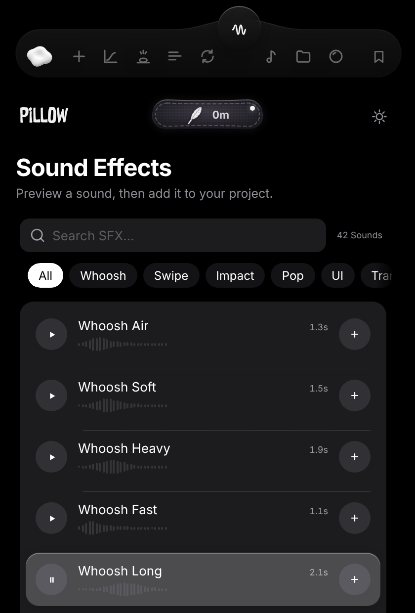

Create
Layers in one click: parent to the selection, match comp duration, move the anchor without moving the layer.
 PiLLOW
PiLLOW
An After Effects extension: curves, bounce, text, sounds, beats and Liquid Glass — in one panel.

Layers in one click: parent to the selection, match comp duration, move the anchor without moving the layer.
Easing curves for selected keyframes — ready presets and your own point editor.
Overshoot or bounce back after every keyframe. Nothing is baked.
Text animations: select a text layer — or Pillow makes one for you.
Finds and relinks every missing file in the project.
42 sounds — whoosh, swipe, impact, pop, UI. Preview, then add to your project.
A marker on every beat of an audio layer, plus beat-synced effects for selected layers.
Apple-style glass: pill, circle, text or your own layer. Built from AE effects, tweakable later.
Your next TikTok, prepared without the extra wait.
Open the site as a Mini App inside Telegram, or get the extension straight to your chat with /extension.